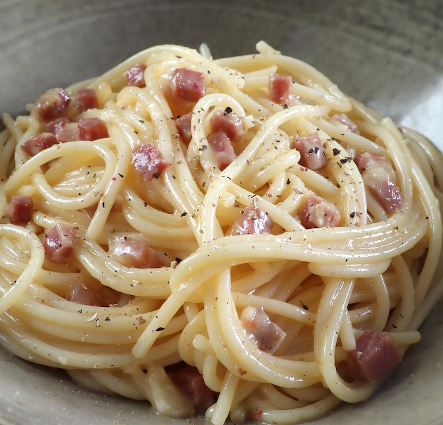

Home
Carbonara

Description
Carbonara is a classic Roman pasta dish made with eggs, Pecorino Romano cheese, pancetta (or guanciale), and black pepper. The heat from the pasta gently cooks the eggs to create a creamy sauce—without using cream. It has a rich, savory flavor with a salty bite from the cured pork and cheese. When made properly, the texture is silky and smooth.
Ingredients
- Pasta: 400g (14 oz) spaghetti or rigatoni.
- Pork: 200–250g (7–9 oz) guanciale, diced (can substitute with pancetta).
- Cheese: 50–100g (1.5–3.5 oz) grated Pecorino Romano (or a mix of Pecorino and Parmigiano-Reggiano).
- Eggs: 2 whole large eggs plus 2–3 large yolks.
- Pepper: Freshly ground black pepper (plenty of it).
Steps
- Dice guanciale (or bacon) and finely grate Pecorino Romano. Whisk eggs and cheese together with pepper.
- Sauté the meat until crisp, then turn off the heat.
- Cook pasta in moderately salted water until al dente.
- Transfer hot pasta to the pan with the meat, toss to coat in fat, then add the egg mixture, stirring rapidly with a splash of hot pasta water to create a silky sauce.